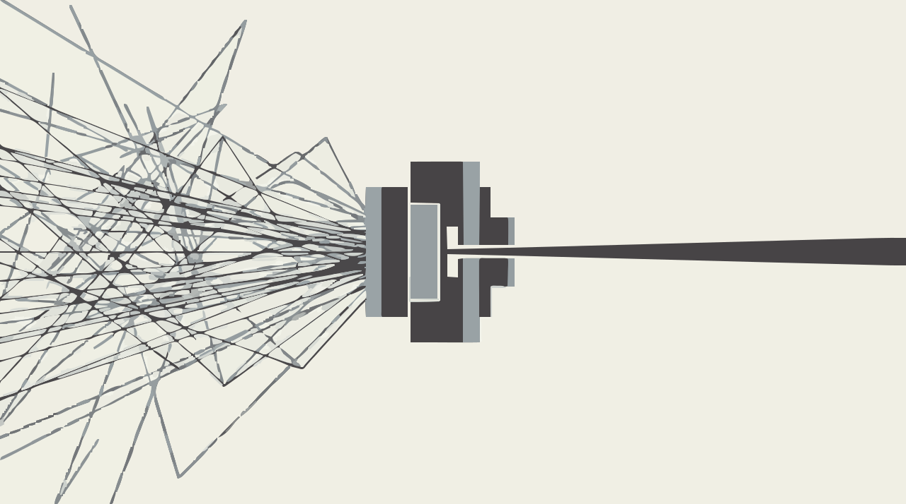
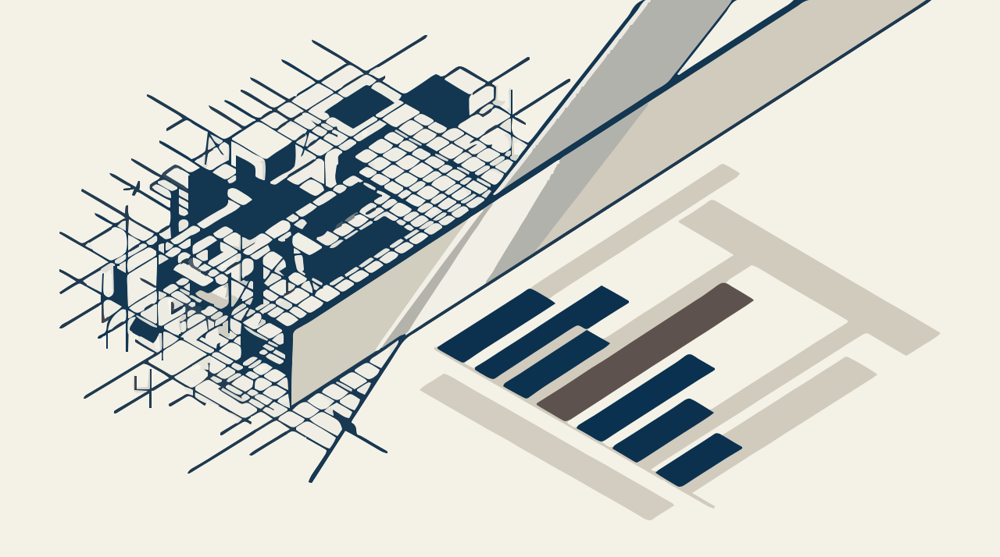
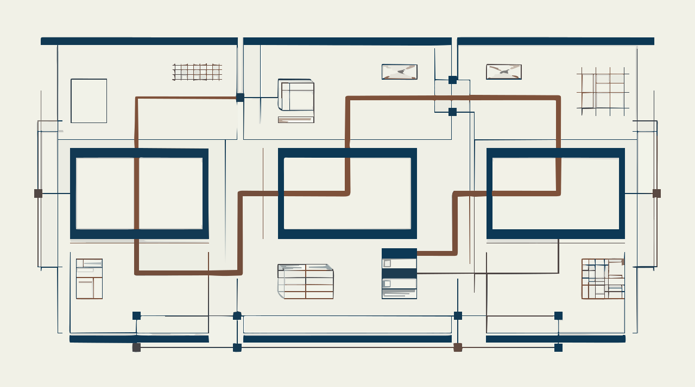

El cuarto de revelado · Sesión 7
Inteligencia de Negocios · Dudbil Olvasada Pabón Riaño · UNAB
Ficha de esta tira · Resultados de aprendizaje 2.1 y 2.2
Eliges el visual según la pregunta y la audiencia, y lo justificas.
Quitas lo que estorba y diriges la mirada.
Dibujas el diseño inicial del dashboard de tu Proyecto 1.
Basado en From Data to Viz y la guía de gráficos de Storytelling with Data. Es un punto de partida, no una ley.
Los mismos cinco países, de la lectura más precisa a la menos precisa.
Por eso una barra suele ganarle a una torta. Pregúntate: ¿qué debe comparar el ojo?
Cleveland y McGill (1984), simplificado: los autores lo proponen como marco de trabajo; estudios posteriores lo matizan según la tarea. Datos: Países Bajos, Irlanda, Alemania, Francia, Australia.
Seis principios de la Gestalt para ordenar sin agregar nada.
Usa una sola diferencia para decir “mira aquí”: lo demás, en gris.
Knaflic (2015), capítulos sobre desorden y atención.
Los mismos datos
1. Fuera el relieve y la cuadrícula.
2. Fuera la leyenda: el eje ya lo dice.
3. Un color de énfasis; el resto en gris.
4. El título dice la conclusión.

Microsoft Learn, visual de KPI: medida base, destino y umbral. La meta de £700.000 es un supuesto del caso, igual que en la sesión 2.
84,0 %
Una cifra y una frase. Sin tablas.Personas y decisiones supuestas para el ejercicio. Datos reales: Chen (2015).
Knaflic (2015): sin otras pistas, se lee desde arriba a la izquierda en zigzag. Bach y otros (2022), patrones de tableros.
Crítica de ejemplos reales
¿Qué pregunta responde?
¿Para quién, y qué decide?
¿Qué le quitarías sin perder nada?
¿Cada cifra se compara con algo?
Y la quinta: ¿cuál es el visual que mejor o peor responde a su tarea, y por qué?
Se critica sobre los ejemplos oficiales de Power BI: Retail Analysis y Sales and Marketing.
English immersion · 10 minutes
“A KPI visual requires a base measure that evaluates to a value, a target measure or value, and a threshold or goal.”
Microsoft Learn, Key Performance Indicator visuals

Rótulos del cuarto oscuro
Colofón
Bach, B., Freeman, E., Abdul-Rahman, A., Turkay, C., Khan, S., Fan, Y. y otros (2022). Dashboard design patterns. IEEE Transactions on Visualization and Computer Graphics. doi:10.1109/tvcg.2022.3209448
Chen, D. (2015). Online Retail [conjunto de datos]. UCI. CC BY 4.0. doi:10.24432/C5BW33
Cleveland, W. S. y McGill, R. (1984). Graphical perception. Journal of the American Statistical Association, 79(387), 531-554. doi:10.1080/01621459.1984.10478080
From Data to Viz. data-to-viz.com
Knaflic, C. N. (2015). Storytelling with Data. Wiley. doi:10.1002/9781119055259
Microsoft Learn. Key Performance Indicator (KPI) visuals. learn.microsoft.com
Microsoft Learn. Retail Analysis sample y Sales and Marketing sample. learn.microsoft.com
Storytelling with Data. Guía de gráficos. storytellingwithdata.com
Iconos: Lucide, licencia ISC. Dirección de arte e ilustraciones: generadas con Gemini, vectorizadas y adaptadas; las ilustraciones no contienen datos. Gráficas hechas con los datos reales.